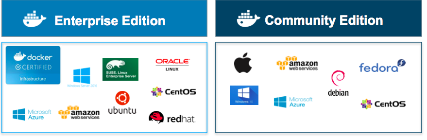
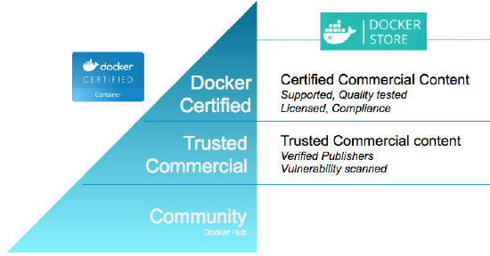
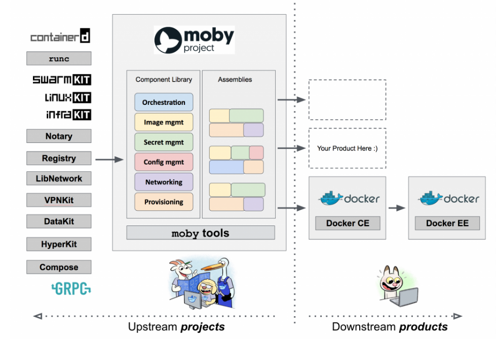
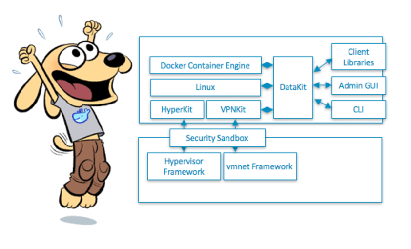
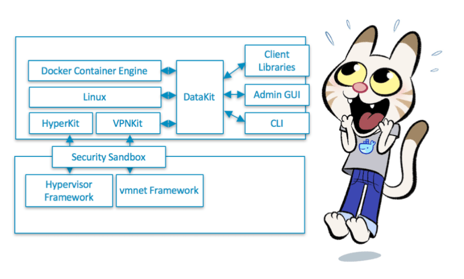

What's New in Docker?
https://goo.gl/QnsmB3
James BennettEnterprise Systems, UITS
Docker Editions
Versioning

Certification Process
Docker Store
Moby Project
Docker for Windows
Docker for Mac
Multi-architecture Support
- x86_64 for Linux and Windows
- ARM
- IBM Z (s390x)
Docker Swarm Mode
- Links multiple Docker engines
- Compatible with the Docker API
- Flexible container scheduling

Docker Services
- Desired state engine which orchestrates containers
- Service discovery
- Service scaling
- Rolling updates
Demo Time!

Enterprise Edition
- HTTP Routing Mesh
- Image security scanning
- Docker Content Trust & Image Promotion
- Finer-grained RBAC
Wrapping up...
- Changes in release schedule & governance
- Reviewed Swarm Mode and Services
- Used multi-staged builds
- Used a Compose file to orchestrate the creation of services
- Pushed the application to test
- Walked through a number of deployment scenarios
- Touched on a few powerful enterprise features
Thanks!

James Bennett - jawbenne@iu.edu